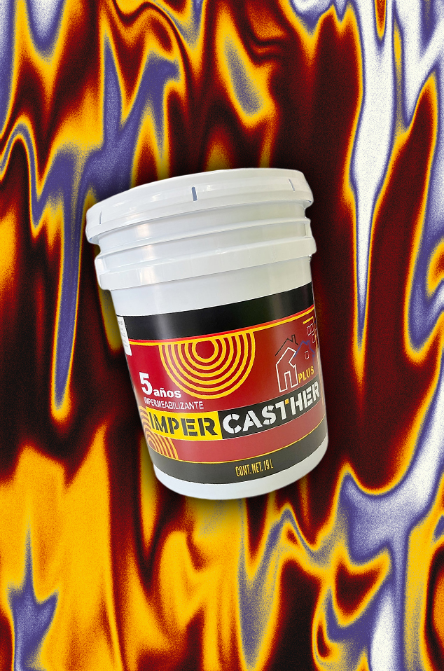

Impermeabilizantes
Protege tus muros de la humedad y el agua

Impercasther 3 y 5 años
Un impermeabilizante elaborado a base de resinas acrílicas estirenadas que ha sido formulado con las mejores materias primas para obtener un producto con altos estándares de calidad.
Ventajas:
- Fácil aplicación.
- No requiere mano de obra especializada.
- Resistencia al intemperismo.
- Excelente adherencia.
- Alta elasticidad.
- Gran durabilidad.
- Resistencia a los rayos UV.
Recomendaciones:
- No debe aplicarse a temperaturas inferiores a 10° C o cuando amenace lluvia, antes de su aplicación.
- Incompatible con sistemas impermeabilizantes asfálticos.
- No mezclarlo con otros productos.
- Usarlo con ventilación adecuada.
- Almacenarlo en lugar fresco con su tapa herméticamente colocada.
- Lavar con agua los utensilios inmediatamente después de su utilización.
- No se recomienda para protección de albercas, cisternas y lugares de inmersión contínua.
- No dejar destapado el recipiente al aire libre.
Presentaciones:
- IMPERCASTHER 3 años e IMPERCASTHER 5 años.
- Colores rojo y blanco, verde sobre pedido.
- En envase de 4 L.
- En cubeta de 19 L.
- En cubeta de 200 L.
Instrucciones de Aplicación:
- Retire de la superficie a impermeabilizar cualquier parte suelta o en mal estado inclusive de impermeabilizantes anteriores.
- Resane cualquier grieta que exista en la superficie, y espere a que seque completamente.
- Barra perfectamente las esquinas, uniones, pretiles y en general toda la superficie donde vaya a impermeabilizar.
- No aplicar sobre superficies húmedas.
- Diluya perfectamente un litro de Impercasther en 5 litros de agua y aplíquelo con brocha, rodillo o cepillo en toda la superficie que va a impermeabilizar y espere hasta que esté perfectamente seco.
- Aplique uniformemente con brocha, cepillo o rodillo una primera capa de impermeabilizante sin diluir cuidando que toda la superficie incluyendo esquinas y pretiles quede perfectamente cubierta.
- Espere a que seque completamente.
- Aplique una segunda capa de impermeabilizante sin diluir en sentido cruzado a la primera capa.